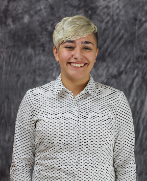
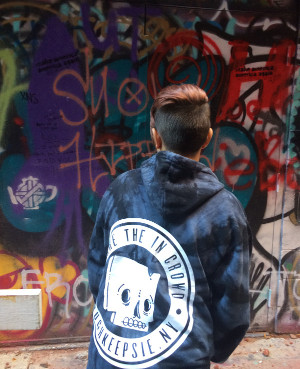
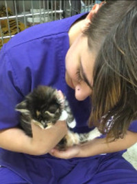
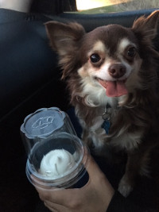
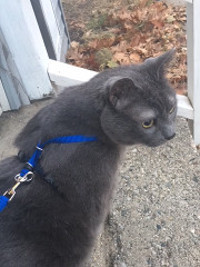

About Me
I've always had a passion for technology. More recently I've discovered a strong interest in human behavior and interaction. The field of user experience gives me the perfect combination of both. I want to be able to make life easier and more accessible for everyone.
 I am currently pursuing a BS in Information at the University of Michigan. Additionally, because of my strong interest in humans, society, and culture, I've also decided to minor in anthropology.
  In my free time I can often be found watching movies with my cat or dog, playing video games, reading, or working on personal projects for All About Animals Rescue.